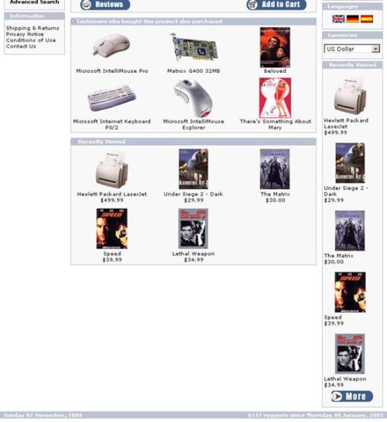
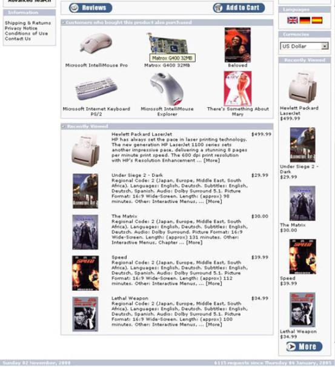

Admin > Setup > Recently Viewed Products. You can change the
following settings from there:
·
Maximum
word length. This
setting will prevent long words from increasing the size of the box they are in.
For a stock osCommerce installation in the right or left column, this should be
about 26. If you are using the bottom box, the default setting sholuld be fine.
·
Box
number of characters.
This setting controls the number of characters in the products name that will
be shown in the column box. You can use this to prevent long names from taking
up too much space in the column.
·
Box
number of products.
Controls the number of products shown in either of the boxes. The bottom box
can usually show a larger number without disrupting the layout.
·
Show
images in box.
Turn the products image on and off in either box.
·
Show
name in box. Turn
the products name on and off in either box.
·
Show
description in box.
Turn the products description on and off in the bottom box. This should
probably be off in grid mode. The column box does not show descriptions due to
lack of space.
·
Box
description length.
This setting controls the number of characters in the products description that
will be shown in the bottom box. You can use this to prevent long descriptions
from taking up too much space.
·
Box
show more. This
setting allows you to show a link to the product page at the end of each
description in the bottom box. The link can always be displayed, displayed only
if the description has been shortened (Shorter), or never shown. The link text
can be changed in catalog/includes/languages/<language>.php
·
Show
price in box. Turn
the products price on and off in either box.
·
Show
button in box .
Show the "more" button in either box.
·
Show
current product. Controls
whether a product is shown if the customer is viewing that product's page.
Usually off, but I have seen sites that have this on.
·
Product
order.Show the
Newest or Oldest product (in the order of the customer viewing products) at the
top of the box. I have seen this both ways.
·
Show
column link. Show
the link to the Recently Viewed page in a column. The supplied file has this at
the top of the right column, where I have seen this in other stores, but the
link can be moved anywhere in either column by editing
catalog/includes/column_right.php (or column_left.php).
·
Show
bottom box. Show
the Recently Viewed box at the bottom of the Products page. If you want this
box to show on other pages, you can take the code from the bottom of
catalog/products_info.php and paste it to a similar location in whatever other
file(s) you want. It can also be pasted into the footer
(catalog/includes/footer.php), but that would probably take some HTML to make
it look reasonable.
·
Bottom
box style.
Controls whether the bottom box displays products in a Grid (similar to the New
Products box) or in rows (similar to the products list in a category.)
·
Bottom
box columns.
Controls the number of columns displayed in the bottom box in Grid mode. The other
boxes in osCommerce seem to be hard-coded to a value of 3.
·
Page
number of products.
Controls the number of products shown per page on the Recently Viewed page.
·
Page
description number of characters. Limit the number of characters shown in the description
on the products page, to prevent long descriptions from making the page
inconveniently large. A value of 0 turns this feature off.
·
Page
show more. This
setting allows you to show a link to the product page at the end of each
description on the Recently Viewed page. The link can always be displayed,
displayed only if the description has been shortened (Shorter), or never shown.
The link text can be changed in catalog/includes/languages/<language>.php
Grid Style Row Style

If you still have questions after reading these
instructions, go to the Recently Viewed
Products(sales optimized) forum and search first. If you still can't find an
answer, ask.